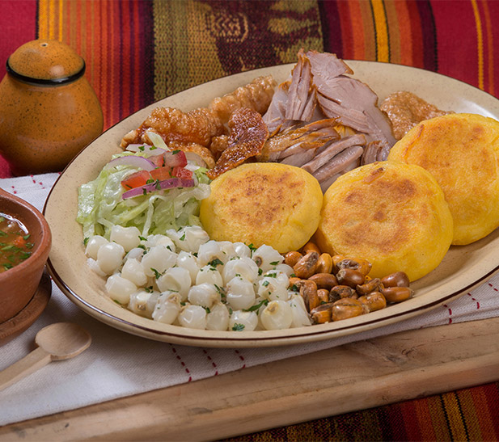

Baked Pork (Ecuadorian Style)
Back to Homepage

Description
Baked Pork (Also known as Hornado de Cerdo) is a traditional dish of Ecuador.
This is perfect if you would like to step out of your comfort zone and try new dishes from other parts of the world.
The baked pork can be made as a standalone dish or even put on two buns to make a burger.
In Ecuador, it is customary to use the entire pig; however, for the purposes of this recipe, we will only be using the legs.
Ingredients
- (1) 10 lb. Pork Leg
- (20) Crushed Garlic Cloves
- (6) Tablespoons of Salt
- (2) Tablespoons of Black Pepper
- (3) Tablespoons of Cumin
- (1) Liter of Chicha or Beer
- Achiote
- Onion
- Lettuce
- Llapingachos (Optional)
Steps
- Wash your Pork Leg and take out any skin if it has any.
- Create deep incisions and try to open the leg as much as possible without causing it to lose its form.
- Mix a plate of your choice of salsa, pepper, and cumin, and brush the leg with this sauce.
- Repeat the previous step with the garlic cloves.
- Leave this preparation in the fridge for 24 hours.
- After 24 hours, take the pork out and add your chicha or beer to the leg. Put it back in the fridge for 2 days. Turn it every three hours.
- When you are ready to bake it, preheat the oven to 400°.
- Once preheated, place pork in oven for 20-30 minutes.
- Once complete, take out of the oven and cover with an abundance of achiote. Make sure to get it in the incisions as well.
- Put it back in the oven and turn it many times until golden. This should take about 2 hours.
- Served in slices, with fresh lettuce and an onion garnish. Can be served with llapingachos.